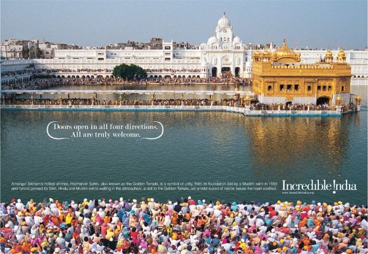

Paper Layout Using Flex
THAR DESERT

RAJASTHAN is the biggest state in India, home to one of the world’s largest deserts and a vibrant, traditional culture. It is also one of the most touristed states in the country. There’s a reason. Imagine majestic forts and palaces, exuberant festivals, time-honoured rituals and scenes of aching beauty featuring camels, peacocks, bright sarees and huge turbans.
GOLDEN TEMPLE
THE TEMPLES AND HOLY PLACES of India are faith-filled, vibrant centres. And oftentimes, a river or mountain or animal — e.g. the cow — is just as sacred as any building. The religions and spiritual fervour of India is part of the country’s special character. It has been said that god is more present in India than anywhere on earth. My teacher, Swami Brahmdev of Aurovalley Ashram, says that India is the soul of the world.
TAJ MAHAL

THE TAJ MAHAL is considered the world’s most beautiful building and the number 1 tourist attraction in India. “A teardrop on the face of eternity.” No matter how many times you’ve seen it in photo and video, no matter how often or how extravagantly it is praised, nothing prepares you for the first time you walk through the red sandstone outer gate and behold it in real life.